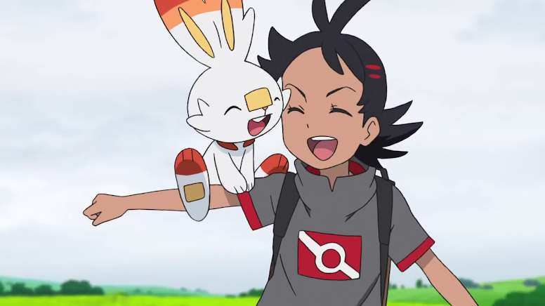

A História do Anime Pokemon

Com o auge dos jogos Pokémon Red e Pokémon Green, lançados no ano de 1996 no Japão, não demorou muito para que sua versão animada fosse lançada e aumentada ainda mais a febre da franquia dos monstrinhos de bolso pelo mundo.
Estreado em 1997, a série de anime Pocket Monsters (ou Pokémon: A Série, no ocidente) atualmente conta com mais de mil episódios divididos em 23 temporadas e 7 séries principais: Pokémon, Geração Avançada, Diamante e Pérola, Preto e Branco (Best Whishes, no Japão), XY, Sol e Lua, e Jornadas (chamada simplesmente de Pocket Monsters, no Japão). Durante todos esses anos a história segue o garoto de 10 anos, Ash Ketchum, e seu parceiro Pikachu na sua jornada para se tornar um Mestre Pokémon.
Nascido e criado na cidade de Pallet, em Kanto, Ash vive com sua mãe e, ao completar 10 anos de idade, finalmente ganha a oportunidade de pode escolher seu Pokémon inicial no laboratório do Professor Carvalho para dar início ao seu sonho pelo título de Mestre Pokémon. No entanto, devido ao seu entusiasmo na noite anterior que não o permitiu dormir, o garoto se atrasa para o seu grande dia e perde a chance de escolher entre os três Pokémon iniciais de Kanto: Bulbasaur, Squirtle ou Charmander. A sorte, contudo, é que o Professor tinha capturado um Pikachu um tanto quanto rebelde que se junta a Ash e, juntos, iniciam sua longa aventura.
Porém, em toda aventura sempre haverá aqueles que estarão no caminho do herói para impedir seu grande objetivo. A Equipe Rocket é uma organização maligna liderada pelo misterioso Giovanni que planeja a dominação mundial através do roubo de todos os Pokémon. Ash e Pikachu sempre acabam impedindo os planos da Equipe Rocket, especialmente de três recrutas que não perdem a oportunidade de roubar seu Pokémon Elétrico, sendo eles: a esquentada Jessie, o sensível James, e o Pokémon falante que anda sobre duas patas Meowth.
A aventura de Ash e Pikachu pelas regiões do mundo Pokémon é compartilhada com amigos que ele faz pelo caminho: inicialmente, Ash é acompanhado por Misty, a líder de ginásio de Cerulean do tipo Água, e Brock, o líder de ginásio do tipo Pedra de Pewter e Criador Pokémon; na sua curta passagem pelas Ilhas Laranja, além da Misty, o desenhista Tracey o acompanha; ao chegar na região de Hoenn, Ash, Pikachu e Brock conhecem a coordenadora Pokémon May e seu pequeno irmão Max; em Sinnoh, o trio de Kanto segue em jornada com a enérgica, e também coordenadora Pokémon, Dawn e seu Piplup.
Na saga Black e White, na distante região de Unova, Ash e Pikachu seguem na companhia da treinadora dos Pokémon do tipo Dragão Iris e o líder de ginásio Cilan; ao chegar em Kalos, a antiga amiga de infância do Ash e competidora das Performances Pokémon, Serena, Clemont, líder de ginásio dos Pokémon tipo Elétrico da cidade de Lumiose, e sua irmã Bonnie se juntam ao time; no arquipélago de Alola, Ash começa a frequentar a Escola Pokémon junto com os amigos Kiawe, Cris, Vitória, Lulú e Lilian, e passar a morar na casa do Professor Nogueira; e, por fim, na série Jornadas, Ash e Pikachu retornam a Kanto e se unem ao Goh, um garoto da cidade de Vermillion que tem por objetivo capturar todos os Pokémon do mundo até chegar ao Mew.
Durante sua estadia nas regiões, Ash enfrenta os Líderes de Ginásio a fim de obter as Insígnias de Ginásio e participar da Liga Pokémon, um evento de batalha que reúne os melhores treinadores de toda a região para decidir o seu Campeão. Após a Liga Pokémon de Hoenn, Ash enfrenta os cérebros da Batalha da Fronteira e entra para o Hall da Fama, obtendo o título de Mestre da Fronteira. Em Alola, Ash passa a enfrentar os desafios dos Kahunas das quatro ilhas que compõem o arquipélago e, ao final, vence uma Liga Pokémon pela primeira vez, ressalvada a Liga Laranja.
Já na série Jornadas Pokémon, Ash decide participar do Campeonato da Coroação Mundial, um sistema que ranqueia vários treinadores ao redor de todo o mundo. Os treinadores capazes de chegar ao topo do ranking têm a chance de batalhar contra o Monarca Leon, que também é o Campeão da região de Galar, para disputar o seu título.

A partir de Jornadas Pokémon, o anime passa a ter um co-protagonista. Goh é um garoto de 10 anos que vive na cidade de Vermillion, em Kanto, com seus pais. Desde muito novo, ele tem o sonho de capturar o Pokémon Mítico Mew, que, segundo as lendas, detém o gene primordial de todos os Pokémon. Para chamar a atenção do Mew, Goh decide capturar todos os Pokémon do mundo e parte em jornada com Ash e Pikachu como bolsistas do Instituto de Pesquisa do Professor Cerejeira, que trabalha na observação do comportamento dos Pokémon. Além de Goh, Ash também conhece a filha do Professor Cerejeira, Chloe, que, inicialmente, não entende o entusiasmo dos meninos pelos Pokémon, mas, ao decorrer da série, passa a ter interesse por eles.
Por mais de vinte anos, Ash e Pikachu têm enfrentado diversas batalhas, conhecido diversos amigos e rivais e compreendido cada vez mais o quão vasto é o Mundo Pokémon. O seu grande objetivo continua sendo se tornar um Mestre Pokémon. E, como o próprio encerramento de cada episódio do anime diz: a jornada continua!